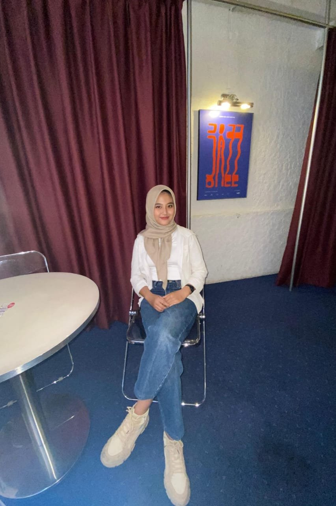

Institute Supply Chain dan Logistik Indonesia
Sekretaris Umum
Maret 2026 – Sekarang
- Mengelola administrasi eksternal dan internal, standarisasi dokumen legal, pengarsipan digital, serta pelaporan kinerja organisasi logistik tingkat nasional.
Nazlia Dzahira
Mahasiswa S1 Teknik Logistik Universitas Pendidikan Indonesia yang tertarik pada perencanaan rantai pasok, operasi pergudangan, logistik ekspor-impor, dan analisis data untuk mendukung pengambilan keputusan dan peningkatan efisiensi operasional logistik.
Lihat pengalaman LinkedIn ↗
Saya ingin memahami bagaimana aliran barang, informasi, dan persediaan dapat dikelola secara terencana dari hulu hingga hilir.
Sekretaris Umum
Maret 2026 – Sekarang
Staff Komisi I PSDO
Agustus 2025 – April 2026
Sponsorship
November 2025
Wakil Ketua Bidang Hubungan Masyarakat
Juli 2025 – Desember 2025
Delegasi Mahasiswa
Juli 2025
| Pencapaian | Bidang dan penyelenggara | Tahun |
|---|---|---|
| Penerima Insentif dan Pendanaan Nasional | PKM-KC (Proyek ODOREYE), Kemendikbudristek | 2026 |
| Semifinalis | Kompetisi Essay Nasional, Ignite Future Fest | 2026 |
| Best Essay Award | Pembangunan dan Pendidikan, Literary Talent & Research Initiative oleh 2045 Institute | 2025 |
| Finalis / Peserta | Kompetisi Mahasiswa Nasional Ilmu Bisnis, Manajemen, dan Keuangan | 2025 |
| Juara 3 | Kompetisi Debat Mahasiswa Indonesia (KDMI) tingkat Universitas | 2025 |